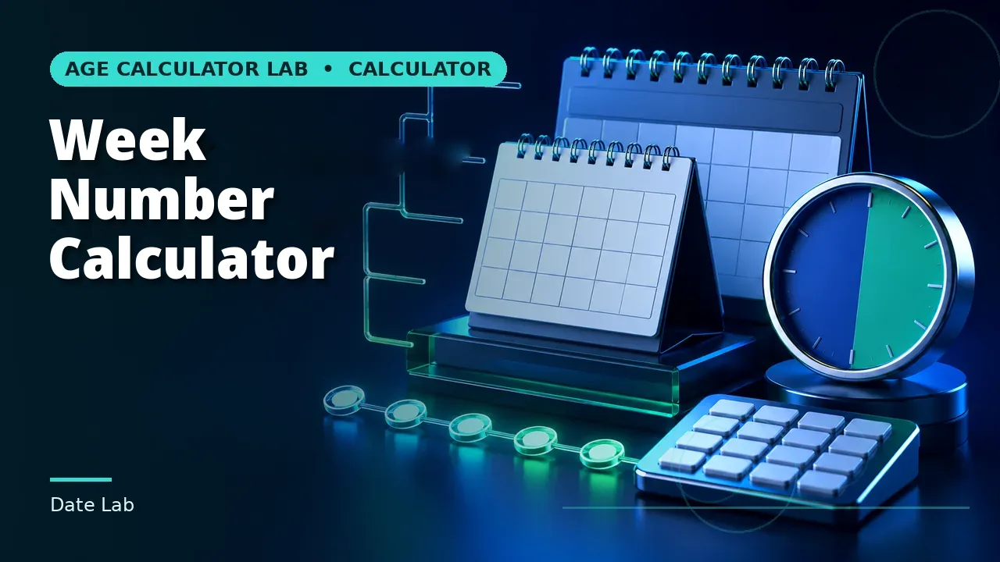

Quick answer
Weekday and day-of-year are straightforward. ISO week numbers carry their own week-year, which differs from the calendar year at both ends of most years.
Weekday
The least ambiguous of the three. Every date has exactly one weekday and every system agrees on which. The only variation is where the week is considered to start — Monday under ISO, Sunday in much of North America — which affects week numbering rather than the weekday itself.
Weekday is worth checking whenever a calculated date will be acted on. A deadline that lands on a Sunday effectively lands on the preceding Friday for anything requiring a person, which quietly removes two days from a plan.
Use this guide with the right tool: Open the Weekday Calculator for day of the week for any valid calendar date. If the question shifts, compare it with the Day of Year Calculator or the Week Number Calculator.
Day of year
The ordinal position from 1 January, so 1 to 365 or 366. It is unambiguous within a year and useless without one: day 60 is 1 March in a common year and 29 February in a leap year.
It shows up in agriculture, astronomy, aviation and some logistics systems, usually as a compact date form. Anywhere it is stored, the year must be stored with it or the value cannot be resolved back to a date.
ISO week number
The one with real complexity. ISO weeks run Monday to Sunday, and week 1 is the week containing the first Thursday of January. That means week 1 often begins in the previous December, and dates in early January can belong to week 52 or 53 of the previous week-year.
The consequence is that an ISO week number carries its own year, which is not always the calendar year. Storing week 1 alongside a calendar year rather than a week-year produces an off-by-one-year error once every year, reliably.
Keeping them straight
Use the full ISO designation where week numbers are exchanged: 2026-W33-7 states the week-year, the week and the day unambiguously. A bare 'week 33' invites the reader to supply their own conventions.
And check whether the system you are talking to uses ISO weeks at all. US-style week numbering starts weeks on Sunday and defines week 1 differently, so the two systems disagree about which week a date falls in for much of the year.
Worked example
16 August 2026 is a Sunday, day 228 of the year, and the last day of ISO week 33, written 2026-W33-7. Look up your own date in all three systems and notice how the week year can start in December.
The year-end seam, day by day
The worked example catches the seam at the start of 2026, where ISO week 1 began on Monday 29 December 2025. The end of the same week-year is busier: because 2026 starts on a Thursday, it is a 53-week ISO year, and its final week runs across the boundary into January 2027. Walking that seam day by day shows all three systems in this guide disagreeing with each other at once, each of them correctly.
Monday 28 December 2026 is day 362 of the calendar year, and it opens the last ISO week: 2026-W53-1. Thursday 31 December is day 365, the calendar year's final day, and 2026-W53-4 — the week-year still has three days to run after the calendar year ends. Friday 1 January 2027 resets the day-of-year counter to 1, but its full ISO designation is 2026-W53-5: a date in calendar 2027 that belongs, for week purposes, entirely to 2026. Sunday 3 January 2027, 2026-W53-7, closes the week-year, and Monday 4 January 2027 is finally 2027-W01-1, day 4 of its calendar year.
Counted out, ISO week-year 2026 runs from Monday 29 December 2025 to Sunday 3 January 2027: 371 days, exactly 53 weeks. For three of those days — 1, 2 and 3 January 2027 — the calendar year and the week-year printed on the same date differ, and for the whole final week the day-of-year and the ISO day-of-week run on unrelated counts: day 365 is a Thursday and the fourth day of its week, day 1 is a Friday and the fifth. None of these are errors or edge-case behaviour. They are the definitions working as designed, at the one point in the year where the designs visibly part.
The seam is also where records quietly go wrong, because each system fails differently when it is stored carelessly. A day-of-year of 1 stored without its year resolves to 1 January of whatever year the reader assumes. A week number of 53 stored against calendar year 2027 describes a week that belongs to 2026 — and 2027 has no week 53 of its own, so the error cannot even be detected from the number alone. The full designation is the only form that survives the seam intact: 2026-W53-5 names a single day unambiguously, while every abbreviation of it gives something up.
It is worth noticing that the weekday, the plainest of the three, is the only one that crosses the seam without comment. Friday 1 January 2027 follows Thursday 31 December 2026 in an unbroken sequence that no year boundary interrupts, which is why the weekday is the safest cross-check when the other two disagree: if a date's week designation and day-of-year seem inconsistent, the weekday will say which reading of the date is the real one.
A 52-week year crosses the same seam more quietly, and the contrast shows what the extra week adds. ISO year 2024 ended on Sunday 29 December 2024 — day 364 of that leap year, designated 2024-W52-7 — and week-year 2025 opened the next morning, Monday 30 December, so only two December days, the 30th and the 31st, carried a week-year ahead of their calendar year, and no January days carried the old one at that seam's far side. The 53-week year is the version where both ends are populated at once: December days belonging to the next week-year where it opens, January days belonging to the old one where it closes.
Common mistakes to avoid
- Pairing an ISO week number with the calendar year. Use the week-year. They differ at both ends of most years.
- Storing a day-of-year without its year. Day 60 is two different dates depending on whether the year is a leap year.
- Assuming week numbering is universal. ISO starts weeks on Monday; US convention starts on Sunday with a different week-1 rule.
Use the right calculator
Use the Weekday Calculator for the day of the week, the Day of Year Calculator for the ordinal day number in a year, and the Week Number Calculator for the ISO week number.

Frequently asked questions
Can a year have 53 ISO weeks?
Yes, when the year starts on a Thursday, or is a leap year starting on a Wednesday. Roughly 71 years in every 400.
Which week number does this site report?
ISO-8601, with weeks starting Monday and week 1 containing the first Thursday of January.
Why do early January dates show week 52 or 53?
Because they belong to the final week of the previous ISO week-year. That is correct behaviour, not an error.